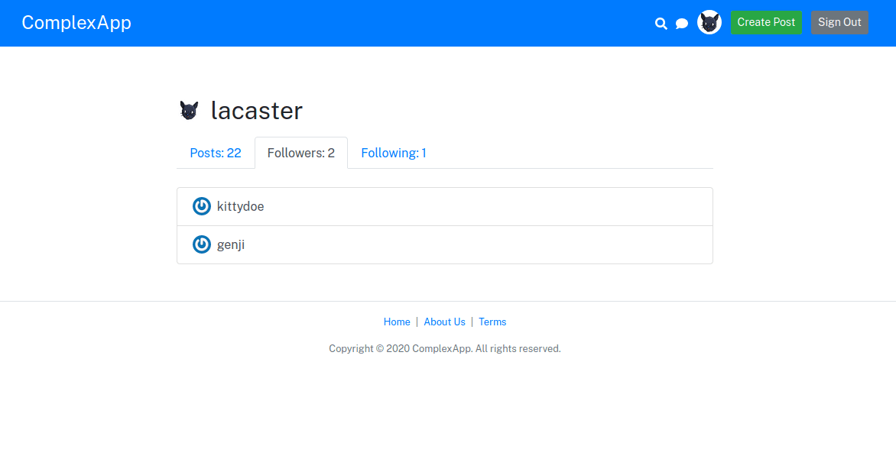
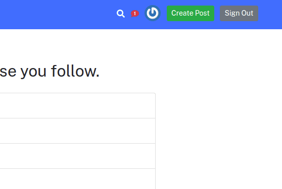
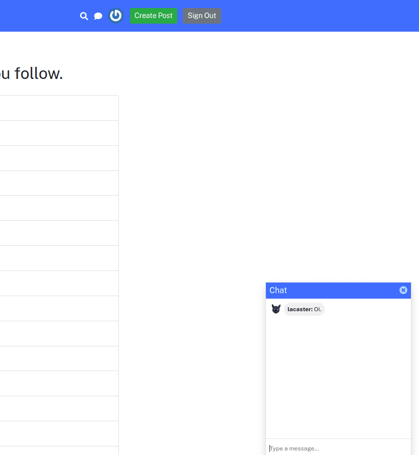
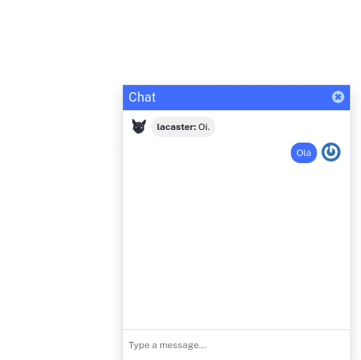
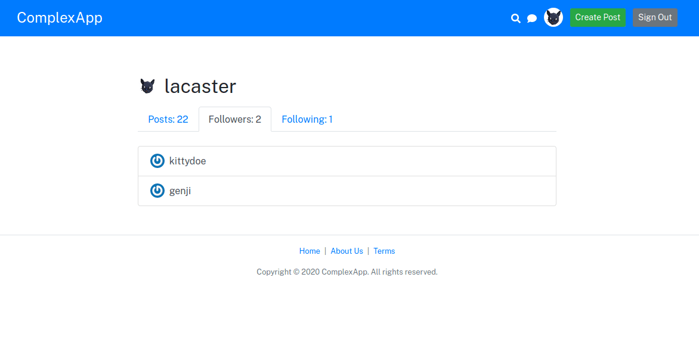
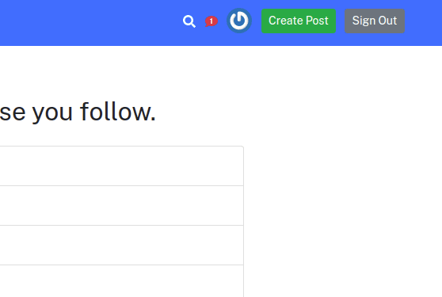
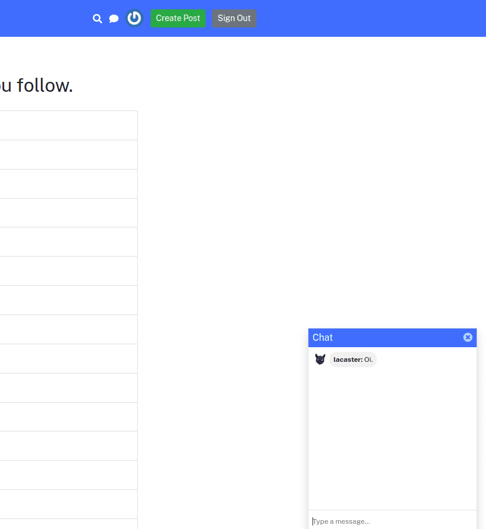
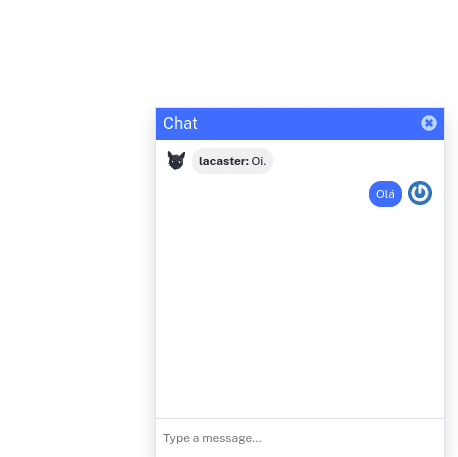

Complex App - 15/02/2021
Complex App envolveu o desenvolvimento front-end utilizando o framework React. O sistema consiste de um esboço de rede social envolvendo cadastro de usuários, possibilidade de seguir usuários para ver suas postagens, busca por postagens, chat usando socket.io além de notificação de recebimento de mensagens de outros usuários .
 






